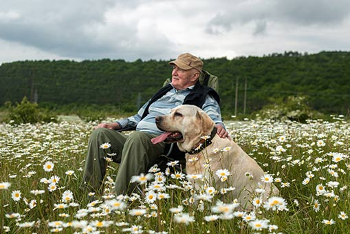

EDADISMO “No soy tu abuelo” La Fundación "la Caixa" impulsa iniciativas para hacer visibles las inquietudes y necesidades de las personas mayores, mejorar su calidad de vida y luchar contra el edadismo, la discriminación por razón de edad ¿Cuántas veces prejuzgamos a otras personas basándonos en la edad que tienen? ¿Qué podemos hacer para entender que la edad no es un hándicap, sino una fortaleza, algo que aporta riqueza y valor a nuestras relaciones? En una sociedad que valora la juventud y la apariencia física por encima de la experiencia y la sabiduría que aporta la edad, el edadismo está cobrando cada vez más fuerza. Este fenómeno se refleja en un informe de la Organización de las Naciones Unidas, que revela que el 45% de la población española se siente discriminada por su edad. Pero, ¿qué es exactamente el edadismo? La discriminación por razón de edad, especialmente de las personas mayores o ancianas. Fuente: Glosario sobre edadismo, Fundación "la Caixa" El término, acuñado en 1969 por el gerontólogo estadounidense Robert Butler, describe los estereotipos y prejuicios existentes hacia las personas mayores, demostrando una falta de comprensión de la diversidad y heterogeneidad de la vejez. El uso de palabras o expresiones discriminatorias que fomentan el edadismo suele ser indicio de un trato inapropiado. Pensar que todas las personas mayores están enfermas o son cascarrabias, por ejemplo, propicia actitudes que influyen en cómo nos relacionamos con ellas, cómo percibimos sus capacidades o limitaciones, y cómo las valoramos y reconocemos. Las consecuencias Las personas mayores no reciben las mismas oportunidades que los demás El colectivo de las personas mayores se convierte en invisible, pues se da por hecho que poco o nada tienen que aportar Al asumirse socialmente que son invisibles, se las excluye del entorno laboral Al considerarse que nada puede hacerse por ellas, se limitan los cuidados o tratamientos que pueden necesitar Las discriminaciones que sufren las personas mayores les abocan a problemas de salud mental y física, y a vivir en una soledad no deseada  Contra la discriminación hacia las personas mayores El 15 de junio se celebra el Día Mundial de Toma de Conciencia de Abuso y Maltrato en la Vejez para sensibilizar a la sociedad sobre la importancia del buen trato a las personas mayores. Desde hace algunos años, la Fundación “la Caixa” aprovecha esta efeméride para concienciar sobre el edadismo, una de las formas de discriminación hacia este colectivo. Entre las acciones de la Fundación destaca el debate “Edadismo y personas mayores: Cómo abordarlo para crear un mundo para todas las edades”, celebrado a principios de junio en el Espacio Fundación "la Caixa" de Madrid. Vânia de la Fuente-Núñez, médica y antropóloga, destacó que "la connotación negativa de la vejez ha aumentado, lo que tiene efectos muy dañinos en las personas mayores y repercute en su salud física y mental, además de en su calidad y esperanza de vida". Esta experta en envejecimiento saludable y becaria de la Fundación "la Caixa" calculó que los afectados por esta circunstancia podrían suponer unos seis millones de los casos de depresión existentes. "El edadismo es un problema de salud, sobre el que falta una mayor concienciación. En España, el 10% de la población no considera que sea un problema, y el 50% no cree que sea un problema serio", dijo De la Fuente-Núñez. Los tres ámbitos del edadismo Otra iniciativa de la Fundación "la Caixa" es el espacio A Fondo, en el que la periodista Gemma Nierga entrevista a expertos destacados en diferentes temas y ámbitos sociales. Una de estas entrevistas, dedicada al edadismo, fue realizada a Montse Celdrán, experta en el tema y que ha desarrollado el contenido del Glosario sobre Edadismo lanzado en 2023 e impulsado por la Fundación "la Caixa". Montse Celdrán, experta en psicología del envejecimiento, elaboró el Glosario sobre Edadismo a partir de las palabras que aportaron cientos de personas mayores participantes de dinámicas grupales en la red de centros que tiene el programa en todo el territorio. También de las recogidas a través de la campaña en RRSS que la Fundación “la Caixa impulsó con motivo del Día Mundial de Toma de Conciencia del Abuso y Maltrato en la Vejez. En la forma de pensar: "Son las ideas y estereotipos que se tienen sobre las personas mayores: ¿son todas ellas dependientes? ¿son todas cascarrabias? Sin duda las homogeneizamos, y es un error." En la forma de sentir: "Las personas mayores me generan miedo, rechazo, y no quiero estar con ellas porque quiero sentirme joven." En la forma de actuar: "¿Ser una persona mayor quiere decir que no puedo conducir, que no puedo adoptar un perro?" Montse Celdrán destaca la importancia de prevenir el edadismo desde el ámbito educativo, "introduciendo en las escuelas la perspectiva de las personas mayores" y fomentando las relaciones intergeneracionales. "Debemos aprovechar la experiencia y los conocimientos que acumulan las personas mayores, valorar su diversidad y darles el papel protagonista que pueden seguir desempeñando". Las personas mayores aún tienen mucho que decir El Glosario sobre Edadismo consta de 45 entradas con palabras o expresiones de las más de 300 facilitadas por participantes en diferentes iniciativas del Programa de personas mayores de la Fundación ”la Caixa”. Aquí se muestran algunas de ellas agrupadas en tres ámbitos. Promover una cultura de respeto e inclusión El edadismo no solo afecta negativamente a las personas mayores, sino que empobrece a toda la sociedad al privarnos de la riqueza que aportan la experiencia y la sabiduría. Es responsabilidad de todos cambiar nuestra forma de pensar, sentir y actuar hacia las personas mayores, promoviendo una cultura de respeto e inclusión. Créditos Coordinación: Adriana Blanco | Producción: Edicions Clariana | Redacción: Gemma Martí | Diseño: Marta Sagarra | Maquetación: Enric Abad | Fotografías: Getty i Fundación "La Caixa" | Un proyecto de Brandslab. Godó Vertical Media